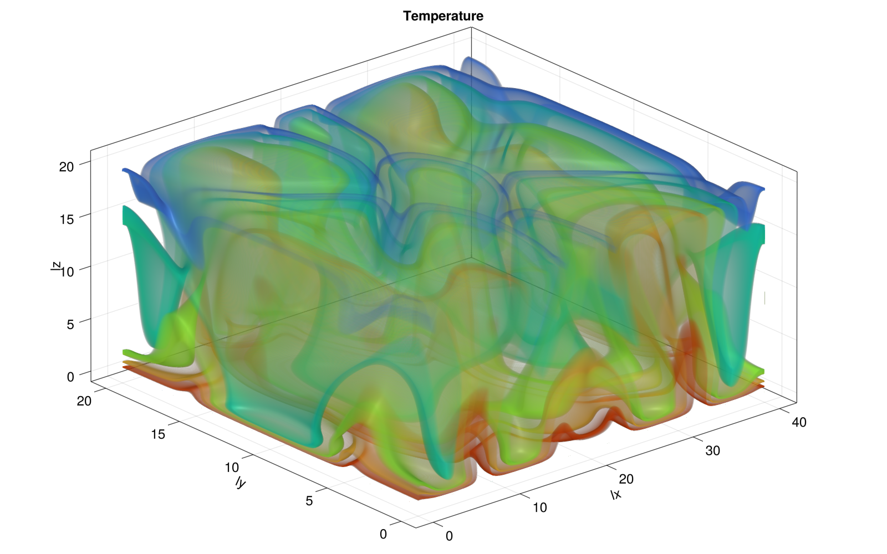

Agenda
📚 The "two-language problem",ParallelStencil.jlxPU implementation
💻 Reference testing, GitHub CI and workflows
🚧 Exercises - (Project 1):
xPU codes for 2D thermal porous convection
2D and 3D xPU implementation
CI workflows
Address the two-language problem
Backend portable xPU implementation
Towards 3D porous convection
Reference testing, GitHub CI and workflows
Combining CPU and GPU implementation within a single code.
You may certainly be familiar with this situation in scientific computing:

Which may turn out into a costly cycle:

This situation is referred to as the two-language problem.
Multi-language/software environment leads to:
Translation errors
Large development time (overhead)
Non-portable solutions
Good news! Julia is a perfect candidate to solve the two-language problem as Julia code is:
simple, high-level, interactive (low development costs)
fast, compiled just ahead of time (before one uses it for the first time)
Julia provides a portable solution in many aspects (beyond performance portability).
As you may have started to experience, GPUs deliver great performance but may not be present in every laptop or workstation. Also, powerful GPUs require to be hosted in servers, especially when multiple GPUs are needed to perform high-resolution calculations.
Wouldn't it be great to have single code that both executes on CPU and GPU?
Using the CPU "backend" for prototyping and debugging, and switching to the GPU "backend" for production purpose.
Wouldn't it be great? ... YES, and there is a Julia solution!
Let's get started with ParallelStencil.jl
ParallelStencil enables to:
Write architecture-agnostic high-level code
Parallel high-performance stencil computations on GPUs and CPUs
ParallelStencil relies on the native kernel programming capabilities of:
CUDA.jl for high-performance computations on Nvidia GPUs
AMDGPU.jl for high-performance computations on AMD GPUs
Base.Threads for high-performance computations on CPUs
READMEBefore we start our exercises, let's have a rapid tour of ParallelStencil's repo and README.
So, how does it work?
As first hands-on for this lecture, let's merge the 2D fluid pressure diffusion solvers diffusion_2D_perf_loop_fun.jl and the diffusion_2D_perf_gpu.jl into a single xPU code using ParallelStencil.
Let's get started with using the ParallelStencil.jl module and the ParallelStencil.FiniteDifferences2D submodule to enable math-close notation.
💻 We'll start from the Pf_diffusion_2D_perf_gpu.jl (available later in the scripts/ folder in case you don't have it from lecture 7) to create the Pf_diffusion_2D_xpu.jl script.
The first step is to handle the packages:
const USE_GPU = false
using ParallelStencil
using ParallelStencil.FiniteDifferences2D
@static if USE_GPU
@init_parallel_stencil(CUDA, Float64, 2, inbounds=false)
else
@init_parallel_stencil(Threads, Float64, 2, inbounds=false)
end
using Plots, Plots.Measures, PrintfThen, we need to update the two compute functions , compute_flux! and update_Pf!.
Let's start with compute_flux!.
ParallelStencil's FiniteDifferences2D submodule provides macros we need: @inn_x(), @inn_y(), @d_xa(), @d_ya().
The macros used in this example are described in the Module documentation callable from the Julia REPL / IJulia:
julia> using ParallelStencil.FiniteDifferences2D
julia>?
help?> @inn_x
@inn_x(A): Select the inner elements of A in dimension x. Corresponds to A[2:end-1,:].This would, e.g., give you more infos about the @inn_x macro.
So, back to our compute function (kernel). The compute_flux! function gets the @parallel macro in its definition and returns nothing.
Inside, we define the flux definition as following:
@parallel function compute_flux!(qDx, qDy, Pf, k_ηf_dx, k_ηf_dy, _1_θ_dτ)
@inn_x(qDx) = @inn_x(qDx) - (@inn_x(qDx) + k_ηf_dx * @d_xa(Pf)) * _1_θ_dτ
@inn_y(qDy) = @inn_y(qDy) - (@inn_y(qDy) + k_ηf_dy * @d_ya(Pf)) * _1_θ_dτ
return nothing
endNote that currently the shorthand -= notation is not supported and we need to explicitly write out the equality. Now that we're done with compute_flux!, your turn!
By analogy, update update_Pf!.
@parallel function update_Pf!(Pf, qDx, qDy, _dx, _dy, _β_dτ)
Pf = ...
return nothing
endSo far so good. We are done with the kernels. Let's see what changes are needed in the main part of the script.
In the # numerics section, threads and blocks are no longer needed; the kernel launch parameters being now automatically adapted:
function Pf_diffusion_2D(;do_check=false)
# physics
# [...]
# numerics
nx, ny = 16*32, 16*32 # number of grid points
maxiter = 500
# [...]
return
endIn the # array initialisation section, we need to wrap the Gaussian by Data.Array (instead of CuArray) and use the @zeros to initialise the other arrays:
# [...]
# array initialisation
Pf = Data.Array(@. exp(-(xc - lx / 2)^2 - (yc' - ly / 2)^2))
qDx = @zeros(nx + 1, ny )
qDy = @zeros(nx , ny + 1)
r_Pf = @zeros(nx , ny )
# [...]In the # iteration loop, only the kernel call needs to be worked out. We can here re-use the single @parallel macro which now serves to launch the computations on the chosen backend:
# [...]
# iteration loop
iter = 1; err_Pf = 2ϵtol
t_tic = 0.0; niter = 0
while err_Pf >= ϵtol && iter <= maxiter
if (iter==11) t_tic = Base.time(); niter = 0 end
@parallel compute_flux!(qDx, qDy, Pf, k_ηf_dx, k_ηf_dy, _1_θ_dτ)
@parallel update_Pf!(Pf, qDx, qDy, _dx, _dy, _β_dτ)
if do_check && (iter % ncheck == 0)
# [...]
end
iter += 1; niter += 1
end
# [...]The performance evaluation section remaining unchanged, we are all set!
Wrap-up tasks
Let's execute the code having the USE_GPU = false flag set. We are running on multi-threading CPU backend with multi-threading enabled.
Changing the USE_GPU flag to true (having first relaunched a Julia session) will make the application running on a GPU. On the GPU, you can reduce ttot and increase nx, ny in order achieve higher .
Changing the inbounds=false flag to inbounds=true will globally apply @inbounds in front of compute statements and deliver better performance. Beware to enable this option only once the code delivers epxected results.
ParallelStencil also allows for more explicit kernel programming, enabled by @parallel_indices kernel definitions. In style, the codes are closer to the initial plain GPU version we started from, diffusion_2D_perf_gpu.jl.
As the macro name suggests, kernels defined using @parallel_indices allow for explicit indices handling within the kernel operations. This approach is currently slightly more performant than using @parallel kernel definitions.
As second step, let's transform the Pf_diffusion_2D_xpu.jl into Pf_diffusion_2D_perf_xpu.jl.
💻 We'll need bits from both Pf_diffusion_2D_perf_gpu.jl and Pf_diffusion_2D_xpu.jl.
We can keep the package handling and initialisation identical to what we implemented in the Pf_diffusion_2D_xpu.jl script, but start again from the Pf_diffusion_2D_perf_gpu.jl script.
Then, we can modify the compute_flux! function definition from the diffusion_2D_perf_gpu.jl script, removing the ix, iy indices as those are now handled by ParallelStencil. The function definition takes however the @parallel_indices macro and the (ix,iy) tuple:
@parallel_indices (ix, iy) function compute_flux!(qDx, qDy, Pf, k_ηf_dx, k_ηf_dy, _1_θ_dτ)
nx, ny = size(Pf)
if (ix <= nx - 1 && iy <= ny) qDx[ix+1, iy] -= (qDx[ix+1, iy] + k_ηf_dx * @d_xa(Pf)) * _1_θ_dτ end
if (ix <= nx && iy <= ny - 1) qDy[ix, iy+1] -= (qDy[ix, iy+1] + k_ηf_dy * @d_ya(Pf)) * _1_θ_dτ end
return nothing
end@parallel_indices one can specify to activate inbounds=true on a per-kernel basis (@parallel_indices (ix, iy) inbounds=true function). This option can be globally overwrritten by @init_parallel_stencil.The # physics section remains unchanged, and the # numerics section is identical to the previous xpu script, i.e., no need for explicit block and thread definition.
We can then keep the scalar preprocessing in the # derived numerics section.
In the # array initialisation, make sure to wrap the Gaussian by Data.Array, initialise zeros with the @zeros macro and remove information about precision (Float64)from there.
The # iteration loop remains concise; xPU kernels are launched here also with @parallel macro (that implicitly includes synchronize() statement):
# [...]
# iteration loop
iter = 1; err_Pf = 2ϵtol
t_tic = 0.0; niter = 0
while err_Pf >= ϵtol && iter <= maxiter
if (iter==11) t_tic = Base.time(); niter = 0 end
@parallel compute_flux!(qDx, qDy, Pf, k_ηf_dx, k_ηf_dy, _1_θ_dτ)
@parallel update_Pf!(Pf, qDx, qDy, _dx, _dy, _β_dτ)
if do_check && (iter % ncheck == 0)
# [...]
end
iter += 1; niter += 1
end
# [...]Here we go 🚀 The Pf_diffusion_2D_perf_xpu.jl code is ready and should squeeze the performance out of your CPU or GPU, running as fast as the exclusive Julia multi-threaded or Julia GPU implementations, respectively.
What about multi-xPU support and distributed memory parallelisation?
ParallelStencil is seamlessly interoperable with ImplicitGlobalGrid.jl, which enables distributed parallelisation of stencil-based xPU applications on a regular staggered grid and enables close to ideal weak scaling of real-world applications on thousands of GPUs.
Moreover, ParallelStencil enables hiding communication behind computation with a simple macro call and without any particular restrictions on the package used for communication.
This will be material for next lectures.
The goal of the first project of the course is to have a thermal porous convection solver in 3D. Before using multiple GPUs in order to afford high numerical resolution in 3D, we will first have to create a 3D single xPU thermal porous convection solver.
The first step is to port the Pf_diffusion_2D_xpu.jl script to 3D.
These are the steps to follow in order to make the transition happen.
Copy and rename the Pf_diffusion_2D_xpu.jl script to Pf_diffusion_3D_xpu.jl
Adapt the last argument of @init_parallel_stencil to 3
Compute qDz, the flux in z-direction
Add that flux to the divergence in the Pf update
Modify the CFL to cfl = 1.0/sqrt(3.1) as for 3D
Consistently add the z-direction in the code
The initialisation can be done as following:
Pf = Data.Array([exp(-(xc[ix] - lx / 2)^2 - (yc[iy] - ly / 2)^2 - (zc[iz] - lz / 2)^2) for ix = 1:nx, iy = 1:ny, iz = 1:nz])And don't forget to update A_eff in the performance formula!
928^3 resolution for a diffusion solver, and the entire porous convection code will certainly not execute at more then 448^3.Last lecture we learned how to make and run tests for a Julia project.
This lecture we will learn how to run those tests on GitHub automatically after you push to it. This will make sure that
tests are always run
you will be alerted by email when a test fails
You may start to wonder why we're doing all of these tooling shenanigans...
One requirement for the final project will be that it contains tests, which are run via GitHub Actions CI. Additionally, you'll have to write your project report as "documentation" for the package which could be deployed to its website, via GitHub Actions.
These days it is expected of good numerical software that it is well tested and documented.
GitHub Actions are a generic way to run computations when you interact with the repository. There is extensive documentation for it (no need for you to read it).
For instance the course's website is generated from the markdown input files upon pushing to the repo:
https://github.com/eth-vaw-glaciology/course-101-0250-00/tree/main/website contains the source
the https://github.com/eth-vaw-glaciology/course-101-0250-00/blob/main/.github/workflows/Deploy.yml is the GitHub Actions script which tells it to run Franklin.jl to
create the website and deploy it on a specific URL https://pde-on-gpu.vaw.ethz.ch
How do we use GitHub Actions for CI?
create a Julia project and add some tests
make a suitable GitHub Actions scrip (that .yml file)
pushing to GitHub will now run the tests (maybe you need to activate Actions in Setting -> Actions -> Allow all actions)
In the last lecture we've setup a project to illustrate how unit-testing works.
Let's now add CI to this:
create a Julia project and add some tests [done in last lecture]
make a suitable GitHub Actions scrip (that .yml file, typically .github/workflows/ci.yml)
pushing to GitHub will now run the tests (maybe you need to activate Actions in Setting -> Actions -> Allow all actions)
For step 2 we follow the documentation on https://github.com/julia-actions/julia-runtest.
The .github/workflows/ci.yml file, adapted from the README of julia-runtest:
name: Run tests
on: [push, pull_request]
jobs:
test:
runs-on: ${{ matrix.os }}
strategy:
matrix:
julia-version: ['1.11']
julia-arch: [x64]
os: [ubuntu-latest]
steps:
- uses: actions/checkout@v5
- uses: julia-actions/setup-julia@latest
with:
version: ${{ matrix.julia-version }}
arch: ${{ matrix.julia-arch }}
- uses: julia-actions/julia-buildpkg@latest
- uses: julia-actions/julia-runtest@latestadd, commit and push to GitHub
click on the "Actions" tab on the project's website
The CI will create a badge (a small picture) which reflects the status of the Action. Typically added to the README.md:
It can be found under
https://github.com/<USER>/<REPO>/actions/workflows/CI.yml/badge.svgand should be added to the near the top of README like so:
[](https://github.com/<USER>/<REPO>/actions/workflows/CI.yml)(this also sets the link to the Actions which gets open upon clicking on it)
👉 See code on https://github.com/eth-vaw-glaciology/course-101-0250-00-L6Testing.jl
This makes the .yml a bit more complicated:
name: Run tests
on: [push, pull_request]
jobs:
test:
runs-on: ${{ matrix.os }}
strategy:
matrix:
julia-version: ['1.11']
julia-arch: [x64]
os: [ubuntu-latest]
steps:
- uses: actions/checkout@v5
- uses: julia-actions/setup-julia@latest
with:
version: ${{ matrix.julia-version }}
arch: ${{ matrix.julia-arch }}
- uses: julia-actions/cache@v1
- uses: julia-actions/julia-buildpkg@latest
- uses: julia-actions/julia-runtest@latest
with:
project: "subfolder"Note that you have to adjust the bit: project: "subfolder" to reflect the subfolder you want to test.
👉 The example is in course-101-0250-00-L6Testing-subfolder.jl.
👉 As you go along in the course you'll want to test different subfolders, thus just change the line in the ci.yml file.
GitHub Actions are limited to 2000min per month per user for private repositories.
Starting from this lecture (and until to lecture 11), homework will contribute to the course's final project. Make sure to carefully follow the instructions from the Project section in Logistics as well as the specific steps listed hereafter.
For the project, you will have to create a PorousConvection folder within your pde-on-gpu-<moodleprofilename> shared private GitHub repo. To do so, you can follow these steps:
Within your pde-on-gpu-<moodleprofilename> folder, copy over the PorousConvection you can find in the l8_project_template folder within the scripts folder. Make sure to copy the entire folder as not to loose the hidden files.
Also, make sure the hidden file .gitignore includes Manifest.toml.
At the root of your pde-on-gpu-<moodleprofilename> folder, create a (hidden) .github/workflows/ folder and add in there the remaining CI.yml file from the l8_project_template (which is the same as from the lecture - see here).
Now, you'll need to edit the Project.toml file to add your full name and email address (the ones you are using for GitHub), and add a UUID as well.
To add a UUID, execute in Julia using UUIDs and then uuid1(). Copy the returned UUID (including the ") to the Project.toml file.
The last part is to update the badge URL in the README within the PorousConvection folder. Replace the <USER>/<REPO> with your username and the name of your repo:
[](https://github.com/<USER>/<REPO>/actions/workflows/CI.yml?query=branch%3Amain)Pushing any changes to your PorousConvection folder should now trigger CI and as for now no tests are executed the status should be green, i.e., passing.
In lectures 9, 10, and 11, we will populate the scripts folder with 2D and 3D porous convection applications, add tests and use the README.md as main "documentation".
You should now be all set and ready to get started 🚀
👉 See Logistics for submission details.
The goal of this exercise is to:
Finalise the xPU implementation of the 2D fluid diffusion solvers started in class
Familiarise with xPU programming, @parallel and @parallel_indices
Port your 2D thermal porous convection code to xPU implementation
Start populating the PorousConvection project folder
In this exercise, you will finalise the 2D fluid diffusion solver started during lecture 8 and use the new xPU scripts as starting point to port your 2D thermal porous convection code.
For this first exercise, we will finalise and add to the scripts folder within the PorousConvection folder following scripts:
Pf_diffusion_2D_xpu.jl
Pf_diffusion_2D_perf_xpu.jl
PorousConvection_2D_xpu.jl
Finalise the Pf_diffusion_2D_xpu.jl script from class.
This version should contain compute functions (kernels) definitions using @parallel approach together with using ParallelStencil.FiniteDifferences2D submodule.
Include the kwarg do_visu (or do_check) to allow disabling plotting/error-checking when assessing performance.
Also, make sure to include and update the performance evaluation section at the end of the script.
Finalise the Pf_diffusion_2D_perf_xpu.jl script from class.
This version should contain compute functions (kernels) definitions using @parallel_indices approach.
You can keep using ParallelStencil.FiniteDifferences2D submodule macros for the derivative definition.
Include the kwarg do_visu (or do_check) to allow disabling plotting/error-checking when assessing performance.
Also, make sure to include and update the performance evaluation section at the end of the script.
Starting from the porous_convection_implicit_2D.jl from Lecture 5, create a xPU version to run on GPUs. Copy and rename the porous_convection_implicit_2D.jl script to PorousConvection_2D_xpu.jl (if you do not have a working 2D implicit thermal porous convection, fetch a copy in the solutions - lectrue 4 on Moodle).
Implement similar changes as you did in the previous 2 tasks, preferring the @parallel (instead of @parallel_indices) whenever possible.
Make sure to use following physical and numerical parameters and compare the xPU (CPU and GPU using ParallelStencil) implementations versus the reference code from lecture 5 using the following (slightly updated) parameters:
# physics
lx, ly = 40.0, 20.0
k_ηf = 1.0
αρgx, αρgy = 0.0, 1.0
αρg = sqrt(αρgx^2 + αρgy^2)
ΔT = 200.0
ϕ = 0.1
Ra = 1000
λ_ρCp = 1 / Ra * (αρg * k_ηf * ΔT * ly / ϕ) # Ra = αρg*k_ηf*ΔT*ly/λ_ρCp/ϕ
# numerics
ny = 63
nx = 2 * (ny + 1) - 1
nt = 500
re_D = 4π
cfl = 1.0 / sqrt(2.1)
maxiter = 10max(nx, ny)
ϵtol = 1e-6
nvis = 20
ncheck = ceil(max(nx, ny))
# [...]
# time step
dt = if it == 1
0.1 * min(dx, dy) / (αρg * ΔT * k_ηf)
else
min(5.0 * min(dx, dy) / (αρg * ΔT * k_ηf), ϕ * min(dx / maximum(abs.(qDx)), dy / maximum(abs.(qDy))) / 2.1)
endThe code running with parameters set to 👆 should produce the following output for the final stage:

Upon having verified the your code, run it with following parameters on Daint.Alps, using one GPU:
Ra = 1000
# [...]
nx,ny = 1023, 511
nt = 4000
ϵtol = 1e-6
nvis = 50
ncheck = ceil(2max(nx, ny))The run may take about one to two hours so make sure to allocate sufficiently resources and time on daint. You can use a non-interactive sbatch submission script in such cases (see here for the "official" docs). You can find a l8_runme2D.sh script in the scripts folder.
Produce a final animation (as following) showing the evolution of temperature with velocity quiver and add it to a section titled ## Porous convection 2D in the PorousConvection project subfolder README.
png every nvis and further assemble them into a gif or mp4. Ideally, the final animation size does not exceeds 2-3 MB.Array(s) can be initialised on the CPU and then made xPU ready upon wrapping them around Data.Array statement (use Array to gather them back on CPU host).
Visualisation happens on the CPU; all visualisation arrays can be CPU only and GPU data could be gathered for visualisation as, e.g., following Array(T)' or qDx_c .= avx(Array(qDx)).
Boundary condition kernel to replace T[[1, end], :] .= T[[2, end-1], :] can be implemented and called as following:
@parallel_indices (iy) function bc_x!(A)
A[1 , iy] = A[2 , iy]
A[end, iy] = A[end-1, iy]
return
end
@parallel (1:size(T,2)) bc_x!(T)👉 See Logistics for submission details.
The goal of this exercise is to:
Create a 3D xPU implementation of the 2D thermal porous convection code
Familiarise with 3D and xPU programming, @parallel and @parallel_indices
Include 3D visualisation using Makie.jl
In this exercise, you will finalise the 3D fluid diffusion solver started during lecture 8 and use the new xPU scripts as starting point to port your 3D thermal porous convection code.
For this first exercise, we will finalise and add to the scripts folder within the PorousConvection folder following scripts:
Pf_diffusion_3D_xpu.jl
PorousConvection_3D_xpu.jl
Finalise the Pf_diffusion_3D_xpu.jl script from class.
This version should contain compute functions (kernels) definitions using @parallel approach together with using ParallelStencil.FiniteDifferences3D submodule.
Include the kwargs do_visu (or do_check) to allow disabling plotting/error-checking when assessing performance.
Also, make sure to include and update the performance evaluation section at the end of the script.
Merge the PorousConvection_2D_xpu.jl from Exercise 1 and the Pf_diffusion_3D_xpu.jl script from previous task to create a 3D single xPU PorousConvection_3D_xpu.jl version to run on GPUs.
Implement similar changes as you did for the 2D script in Exercise 1, preferring the @parallel (instead of @parallel_indices) whenever possible.
Make sure to use the z-direction as the vertical coordinate changing all relevant expressions in the code, and assume αρg to be the gravity acceleration acting only in the z-direction. Implement following domain extend and numerical resolution (ratio):
# physics
lx, ly, lz = 40.0, 20.0, 20.0
αρg = 1.0
Ra = 1000
λ_ρCp = 1 / Ra * (αρg * k_ηf * ΔT * lz / ϕ) # Ra = αρg*k_ηf*ΔT*lz/λ_ρCp/ϕ
# numerics
nz = 63
ny = nz
nx = 2 * (nz + 1) - 1
nt = 500
cfl = 1.0 / sqrt(3.1)Also, modify the physical time-step definition accordingly:
dt = if it == 1
0.1 * min(dx, dy, dz) / (αρg * ΔT * k_ηf)
else
min(5.0 * min(dx, dy, dz) / (αρg * ΔT * k_ηf), ϕ * min(dx / maximum(abs.(qDx)), dy / maximum(abs.(qDy)), dz / maximum(abs.(qDz))) / 3.1)
endInitial conditions for temperature can be done by analogy to the 2D case, but using the iterative approach presented in class (see here).
T = [ΔT * exp(-xc[ix]^2 - yc[iy]^2 - (zc[iz] + lz / 2)^2) for ix = 1:nx, iy = 1:ny, iz = 1:nz]Make sure to have yc defined using extends similar to xc, and zc being the vertical dimension.
For boundary conditions, apply heating from the bottom (zc=-lz) and cooling from top zc=0 in the vertical z-direction. Extend the adiabatic condition for the walls to the xz and yz planes. The yz BC kernel could be defined and called as following:
@parallel_indices (iy, iz) function bc_x!(A)
A[1 , iy, iz] = A[2 , iy, iz]
A[end, iy, iz] = A[end-1, iy, iz]
return
end
@parallel (1:size(T, 2), 1:size(T, 3)) bc_x!(T)Verify that the code runs using the above low-resolution configuration and produces sensible output. To this end, you can recycle the 2D visualisation (removing the quiver plotting) in order to visualise a 2D slice of your 3D data, e.g., at ly/2:
iframe = 0
if do_viz && (it % nvis == 0)
p1 = heatmap(xc, zc, Array(T)[:, ceil(Int, ny / 2), :]'; xlims=(xc[1], xc[end]), ylims=(zc[1], zc[end]), aspect_ratio=1, c=:turbo)
png(p1, @sprintf("viz3D_out/%04d.png", iframe += 1))
endUpon having verified your code, run it with following parameters on Daint.Alps, using one GPU:
Ra = 1000
# [...]
nx, ny, nz = 255, 127, 127
nt = 2000
ϵtol = 1e-6
nvis = 50
ncheck = ceil(2max(nx, ny, nz))The run may take about three hours so make sure to allocate sufficiently resources and time on Daint.Alps. You can use a non-interactive sbatch submission script in such cases (see here for the "official" docs). You can find a l8_runme3D.sh script in the scripts folder.
Produce a figure showing the final stage of temperature distribution and add it to a new section titled ## Porous convection 3D in the PorousConvection project subfolder's README.
For the figure, you can use GLMakie to produce some isocontours visualisation; add the following binary dump function to your code
function save_array(Aname,A)
fname = string(Aname, ".bin")
out = open(fname, "w"); write(out, A); close(out)
endwhich you can call as following at the end of your simulation
save_array("out_T", convert.(Float32, Array(T)))Then, once you've created the out_T.bin file, read it in using the following code and produce a figure
using GLMakie
function load_array(Aname, A)
fname = string(Aname, ".bin")
fid=open(fname, "r"); read!(fid, A); close(fid)
end
function visualise()
lx, ly, lz = 40.0, 20.0, 20.0
nx = 255
ny = nz = 127
T = zeros(Float32, nx, ny, nz)
load_array("out_T", T)
xc, yc, zc = LinRange(0, lx, nx), LinRange(0, ly, ny), LinRange(0, lz, nz)
fig = Figure(size=(800, 500))
ax = Axis3(fig[1, 1]; aspect=(1, 1, 0.5), title="Temperature", xlabel="lx", ylabel="ly", zlabel="lz")
surf_T = contour!(ax, xc, yc, zc, T; alpha=0.05, colormap=:turbo)
save("T_3D.png", fig)
return fig
end
visualise()This figure you can further add to your README.md. Note that GLMakie will probably not run on Daint.Alps as GL rendering is not enabled on the compute nodes.
For reference, the 3D figure produced could look as following

And the 2D slice at y/2 displays as

👉 See Logistics for submission details.
The goal of this exercise is to:
setup Continuous Integration with GitHub Actions
Add CI setup to your PorousConvection project to run one unit and one reference test for both the 2D and 3D thermal porous convection scripts.
👉 make sure that the reference test runs on a very small grid (without producing NaNs). It should complete in less than, say, 10-20 seconds.
Follow/revisit the lecture and in particular look at the example at https://github.com/eth-vaw-glaciology/course-101-0250-00-L6Testing-subfolder.jl to setup CI for a folder that is part of another Git repo (your PorousConvection folder is part of your pde-on-gpu-<username> git repo).
Push to GitHub and make sure the CI runs and passes
Add the CI-badge to the README.md file from your PorousConvection folder, right below the title (as it is commonly done).
You may realise that you can't initialise ParallelStencil for 2D and 3D configurations within the same test script. A good practice is to place one test2D.jl and another test3D.jl scripts within the test folder and call these scripts from the runtests.jl mains script, which could contain following:
using Test
using PorousConvection
function runtests()
exename = joinpath(Sys.BINDIR, Base.julia_exename())
testdir = pwd()
printstyled("Testing PorousConvection.jl\n"; bold=true, color=:white)
run(`$exename -O3 --startup-file=no $(joinpath(testdir, "test2D.jl"))`)
run(`$exename -O3 --startup-file=no $(joinpath(testdir, "test3D.jl"))`)
return
end
exit(runtests())Each sub-test file would then contain all what's needed to run the 2D or 3D tests. You can find an example of this approach in ParallelStencil's own test suite here, or in the GitHub repository related to the pseudo-transient solver publication discussed in Lecture 3.